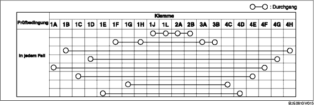
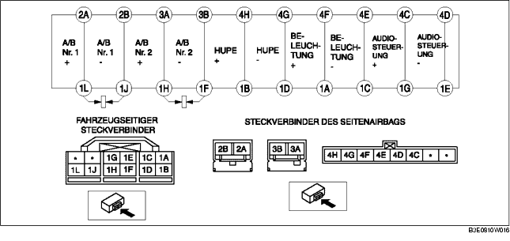

SPIRALFEDERKABEL PRÜFEN
B3E081066123W03
1. Das Spiralfederkabel ausbauen. (Siehe SPIRALFEDERKABEL AUSBAUEN/EINBAUEN.)
2. Prüfen, ob der Durchgang der Tabelle entspricht.
-
• Falls er nicht den Angaben entspricht, das Spiralfederkabel austauschen.
-
Hinweis
-
• Wenn der fahrzeugseitige Steckverbinder des Spiralfederkabels gelöst wird, werden die Klemmen 1F, 1H, 1J und 1L kurzgeschlossen, um ein versehentliches Auslösen des Airbags zu verhindern.

